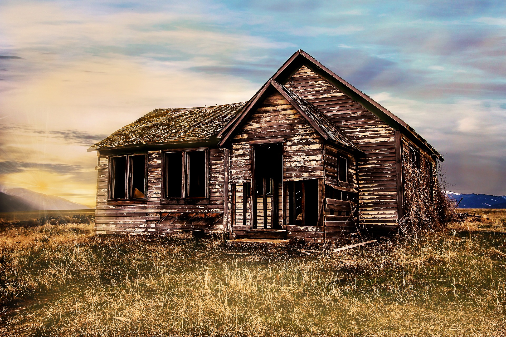

Ghost Towns in Oregon
This is a paragraph about ghost towns in Oregon. Oooohhhh spoooky explain what a ghost town is
MAKE THIS IMAGE RESPONSIVE https://www.w3schools.com/css/css_rwd_images.asp

Friend
Bridal Veil
Buncom
Narrows
New Era
Peak
Bohemia City